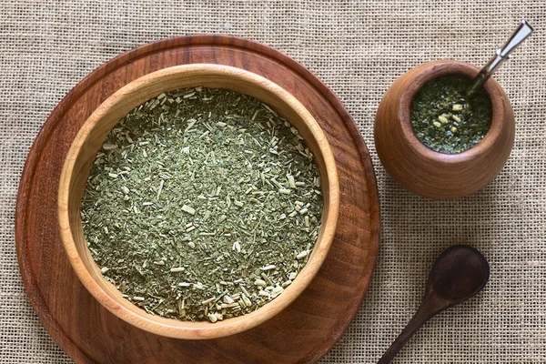

Home
Productos
Contacto
Nosotros
Mi cuenta
Como hacer el mate ideal
Poner yerba hasta la mitad del mate
Calentar el agua hasta los 80 grados
Inclinar el mate a 45 grados
Poner agua fria y dejar reposar por 5 minutos
Cebar siempre dejando yerba seca en la parte superior

Como lavar el mate
No dejar el mate con yerba hasta el siguiente uso
Vaciar la mayor cantidad de yerba en el tacho
Lavar con agua tibia mojando lo menos posible el cuero
Dejar secando boca arriba